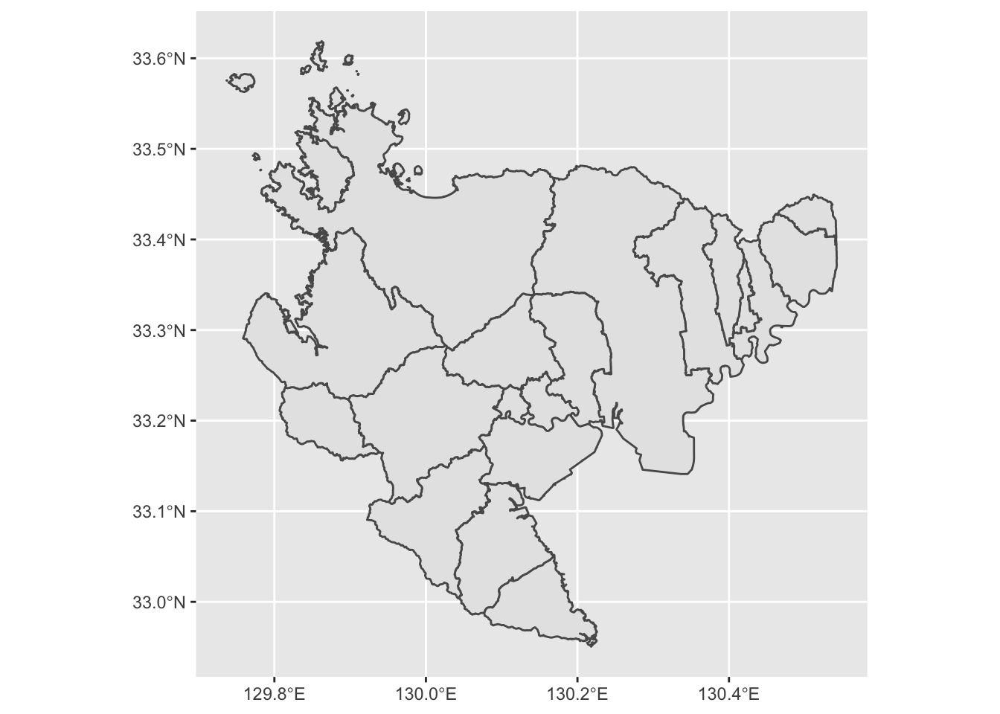

3 コロプレス・マップ（塗り分け地図）
3.1 概要
コロプレスマップ（塗り分け地図）を作成する方法を説明します。 佐賀県の市町村別人口密度の塗り分け地図を作成しましょう。
3.2 データの準備
「佐賀県オープンデータカタログサイト」にある「オープンデータマップ用データセット」を使用します。
- 男女別人口総数及ひ世帯総数（市町村別）
- ポリゴン（市町村別）
上記2つのファイル（410004saga.xlsxと410004saga.geojson）をダウンロードしてください。
ワーキングディレクトリの直下にdataフォルダを作成し，ダウンロードしたファイルを保存してください（今後，GISデータはこのフォルダに保存することにしましょう）。
3.3 地図の描画
まず，使用するライブラリを読み込みます。ここでは，tidyverse（地図の描画に使うggplot2ライブラリが含まれています）に加えて，GISデータを扱うライブラリsfを使用します。
library(tidyverse)## ─ Attaching packages ──────────────────── tidyverse 1.3.1 ─## ✓ ggplot2 3.3.5 ✓ purrr 0.3.4
## ✓ tibble 3.1.2 ✓ dplyr 1.0.7
## ✓ tidyr 1.1.3 ✓ stringr 1.4.0
## ✓ readr 1.4.0 ✓ forcats 0.5.1## ─ Conflicts ───────────────────── tidyverse_conflicts() ─
## x dplyr::filter() masks stats::filter()
## x dplyr::lag() masks stats::lag()library(sf)## Linking to GEOS 3.8.1, GDAL 3.2.1, PROJ 7.2.1次に，先ほどdataフォルダに保存した410004saga.geojsonを，
sfライブラリのst_read関数を使って読み込みます。
map <- st_read("data/410004saga.geojson")## Reading layer `410004saga' from data source
## `/Users/kazukitamura/github/bookdowntest/data/410004saga.geojson'
## using driver `GeoJSON'
## Simple feature collection with 20 features and 4 fields
## Geometry type: MULTIPOLYGON
## Dimension: XY
## Bounding box: xmin: 129.7368 ymin: 32.95054 xmax: 130.5424 ymax: 33.6189
## Geodetic CRS: WGS 84読み込んだmapデータをプロットします。
ggplot() + geom_sf(data = map) 
できました。簡単ですね。
3.4 地図投影変換
先ほど表示された佐賀県の地図は，横軸に経度を，縦軸に緯度をとった平面に